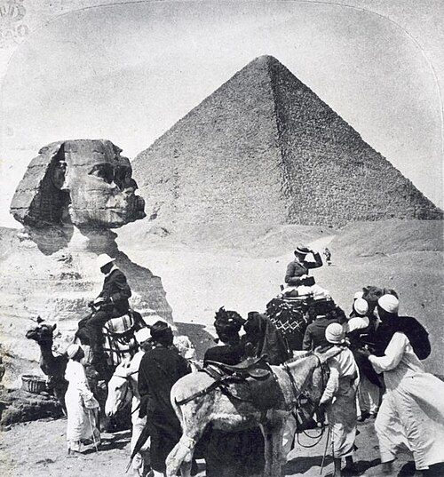

History
Egypt's cultural tourism trade has fluctuated since the 19th century, increasing in popularity alongside the rise of Egyptology as an academic and amateur pursuit. Successive Egyptian governments have placed great emphasis on the value of cultural tourism, "confident that no other countries could actually compete in this area".[1]

Market and Value
Tourists from South Asia and East Asia, in particular, have been identified as responding well to marketing campaigns that focus on Egyptian cultural tourism. Tourism Bureau representatives have announced plans to increase marketing spending on those regions.
Signature Travel Network writer and Huffington Post columnist Jean Newman Glock notes that Egypt's cultural tourism trade is worth $10 to every $1 spent by tourists whose travel focuses on Egypt's Red Sea resorts. As a result, she says, "Egypt is hoping those interested in exploring their antiquities will return, in great numbers, soon."
According to industry representatives, the government, "recently [2014] announced a master plan to attract 25 million tourists by 2020". The plan includes dedicated online and traditional marketing strategies focused on assuring prospective tourists that cultural tourism centres are safe following the Arab Spring and Egyptian Revolution of 2011.
In 2015, a conglomeration which includes the Egyptian Government signed an agreement with French company Prism to create a sound and light show encompassing the Giza Necropolis pyramids and the nearby Great Sphinx of Giza. The pyramids served as the site of the first African son et lumière in 1961.